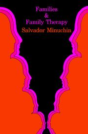

Families and Family Therapy
Book·Salvador Minuchin, 1974·家庭与家庭治疗

Minuchin proposes structural family therapy, which looks at family boundaries, alliances and hierarchies and changes symptoms through restructuring.
- Author
- Salvador Minuchin
- Year
- 1974
- Difficulty
- Intermediate
- Kind
- Practice
- Schools
- Family Systems Therapy
- Core theories
- Structural Family Therapy
Editions
- Chinese edition 《家庭与家庭治疗》 【美】萨尔瓦多·米纽庆Salvador Minuchin / 萨尔瓦多·米纽庆 · tr. 谢晓健 · 商务印书馆 · 2009 Douban 9.1 (216 ratings) Douban page ↗
- English edition Families and Family Therapy Salvador Minuchin · Harvard University Press, first edition · 1974 Open Library ↗